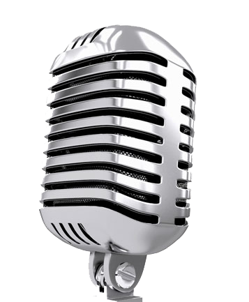

BetterEars, originally known as Karajan Eartrainer, was the first ear-training app on the AppStore. Over time, new features have been added. With the ability to customize exercises, BetterEars is suitable for all levels of ear training. Better Ears will help you improve your musical skills and improve your hearing. It is perfect for beginners and music masters alike! BetterEars is available for iOS, Android and MacOS.
Better Ears has a built-in editor* for creating your own chords, scales and chord progressions. It also contains 13 different exercises from the different areas of music theory & ear training.
• Interval recognition
• Scale recognition
• Chord recognition
• Chord progressions
• Pitch recognition
• Melodic dictation
• Tempo recognition
• Key Signature recognition
• Single notes music reading
• Interval music reading
• Scale music reading
• Chord music reading
• Melody music reading
For each exercise, Better Ears knows all your current statistics, including how often you answered each question correctly or incorrectly. This makes it easy to see which exercises are the most difficult for you. The statistics also allow you to track your progress. If you use the Better Ears sync mode, you can see the stats from all your devices at a glance.

Better Ears supports sound routing through an external MIDI device,
so you can use your existing MIDI master keyboard or sound module.
You can even control Better Ears with a connected keyboard.
The built-in microphone* pitch detection allows you to answer
the questions with your voice or a real instrument (e.g. piano or guitar).
Simply play the individual notes on your instrument or
sing them when the microphone button lights red.